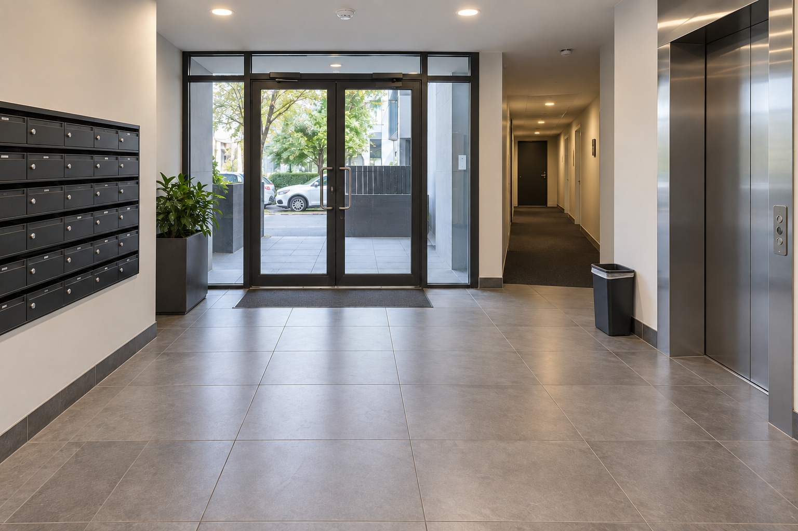

Entry & lobby
Floors, mats, entry glass, intercoms, mailboxes and presentation points.

01 / SHIFT SERVICES
Common property should feel cared for every day. A floor-by-floor programme gives strata managers, owners corporations and building managers a repeatable standard with visible records.
BUILD A SITE BRIEF↗THE TYPICAL SCOPE
Floors, mats, entry glass, intercoms, mailboxes and presentation points.
Cars, tracks, buttons, mirrors, floor surfaces, skirtings and handrails.
Fire stairs, landings, cobweb rotations and agreed high touch points.
Bin room hygiene, shared bins, paths and scheduled pressure work.
THE SERVICE RECORD
A written scope sets the routine; a useful record shows when the work happened and what needs attention next.